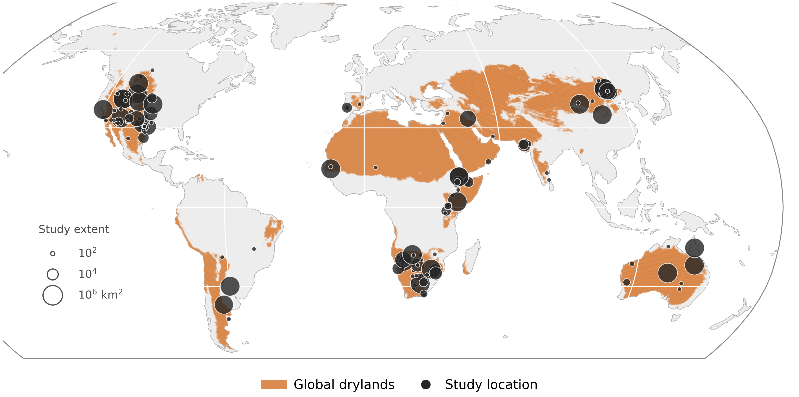

Chapter 1
What two decades of studies tell us about mapping shrubs
A systematic review of 174 studies and 234 sensor and method configurations on remote sensing of woody vegetation in global drylands. The review examines how sensor choice and spatial resolution have shaped the mapping of shrub encroachment, and which questions remain open.